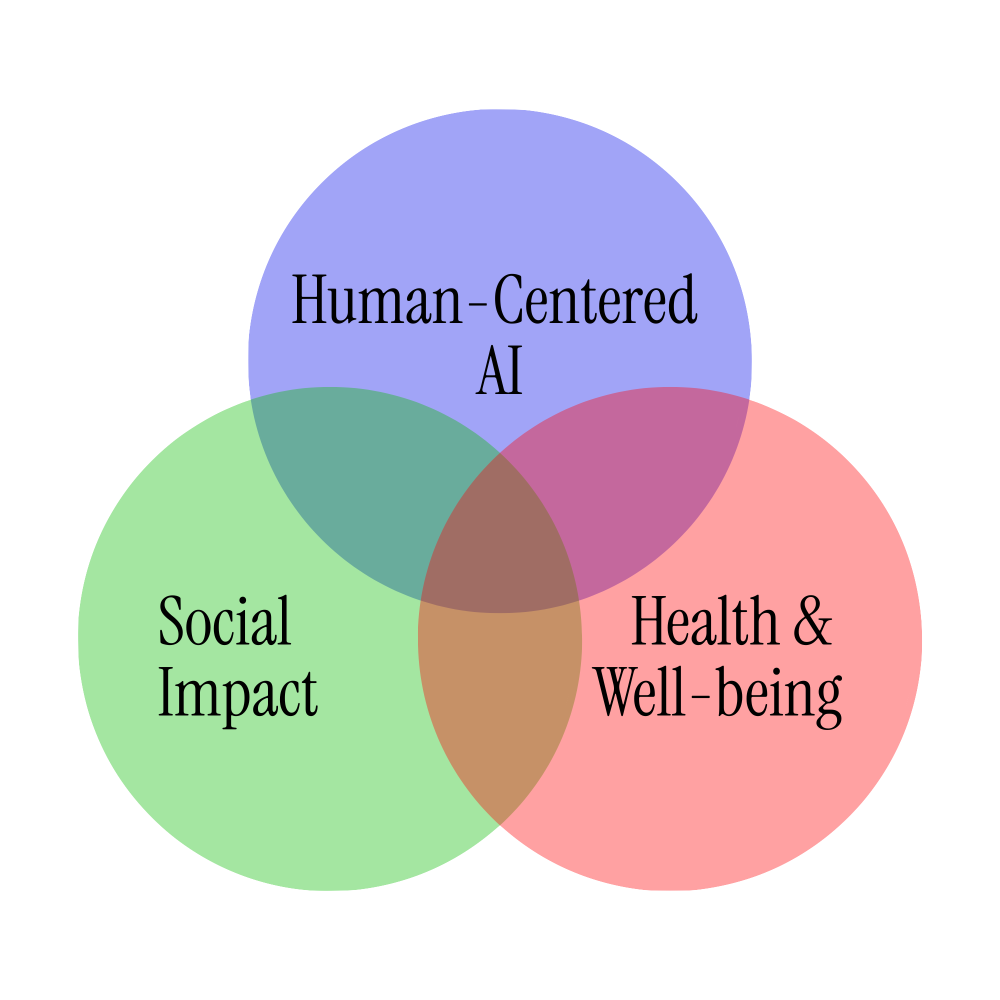

Hi! I'm Zi Qi ("zee-chee"). I'm a full-time researcher at Columbia's Computer-Enabled Abilities Lab (Mentor: Brian A. Smith). We're working on an NSF-funded project to empower art exploration for blind and low-vision individuals using AI. I'm also a Research Fellow at Columbia's Trust Collaboratory, organizing participatory workshops to build conversational AI that better aligns with human values. I recently graduated summa cum laude from Barnard College, where I majored in Neuroscience.
I'm curious about how AI should be designed for human flourishing. My work sits at the intersection of research, industry, and policy. Using both behavioural science theories and HCI, my mission is to build technology that aligns more closely with our human values.
